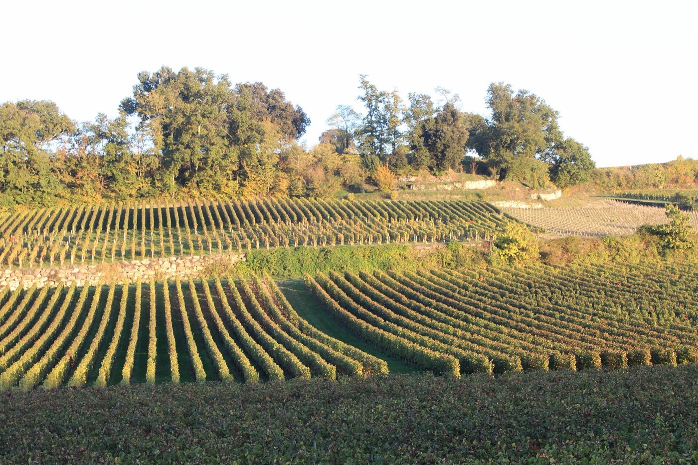

Septembre 2026
Le Trail des Vignes : rendez-vous le 4 octobre
Le club organise sa toute première course. Trail, marche, course enfant et repas sur place : on vous dit tout sur cette journée solidaire au cœur du vignoble.
Lire l'article